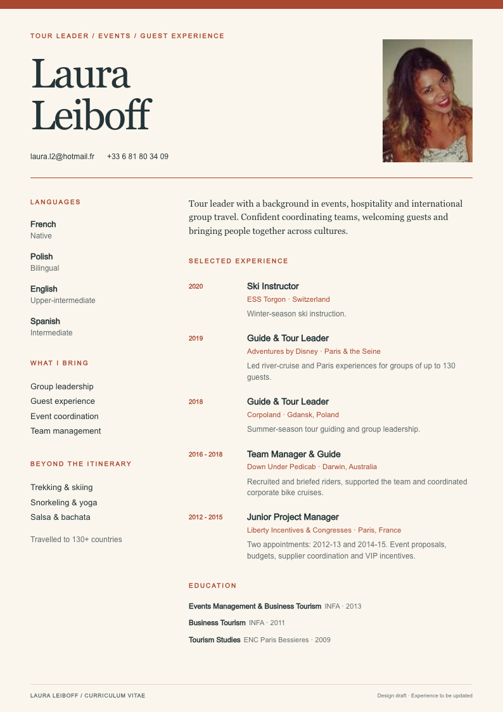
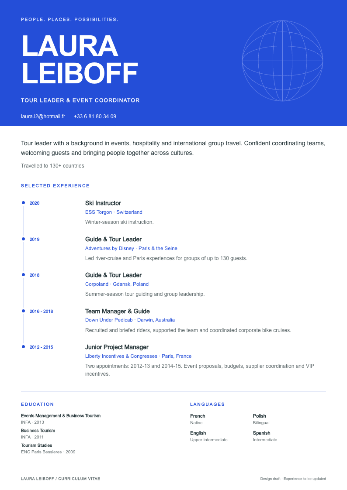
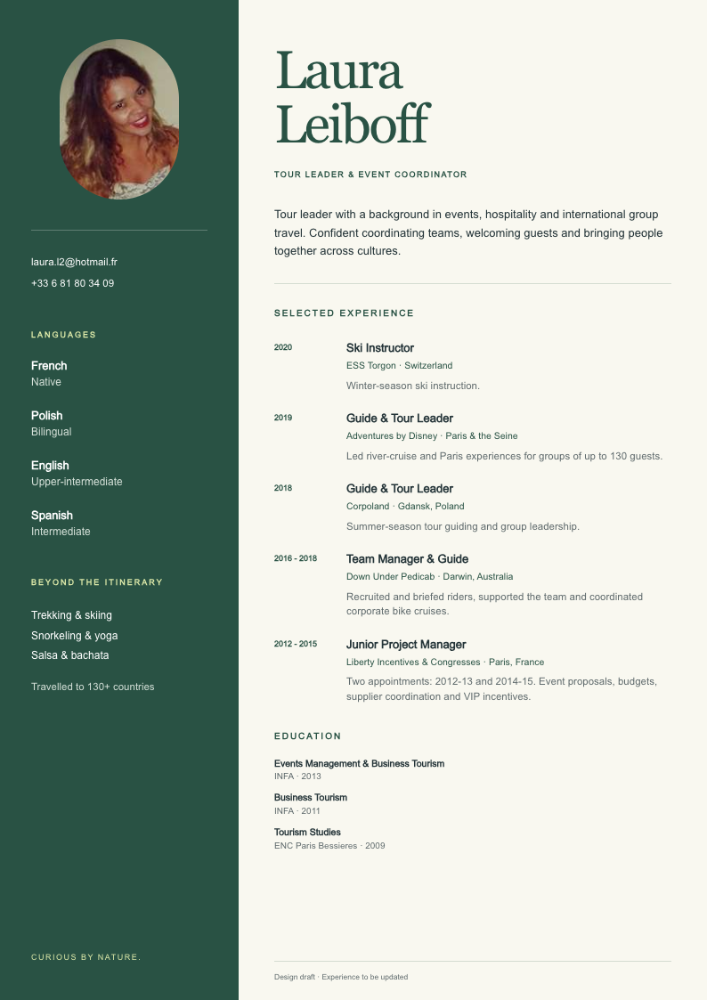
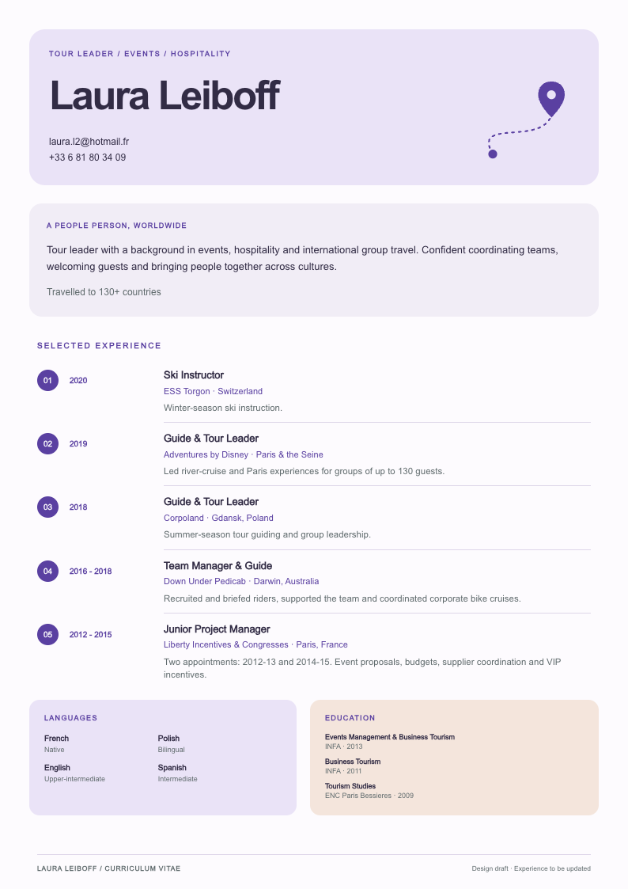

Laura Leiboff / CV design exploration
Four ways to go.
A little color. A lot of experience.
Four directions for a tour leader with a love of people and places. Open a design to see it in full.

01↗
Terracotta editorial
Warm, personal and a little magazine-like.

02↗
Cobalt atlas
Confident type, bright blue and a clear experience timeline.

03↗
Forest field notes
Grounded, outdoorsy and quietly adventurous.

04↗
Lilac studio
Friendly color blocks with a modern, playful rhythm.
Working design drafts, using selected experience from the 2020 CV. Copy is ready to be updated.
Shared text lives in content.js; layout and colors live in styles.css. Every design includes an A4 print view.